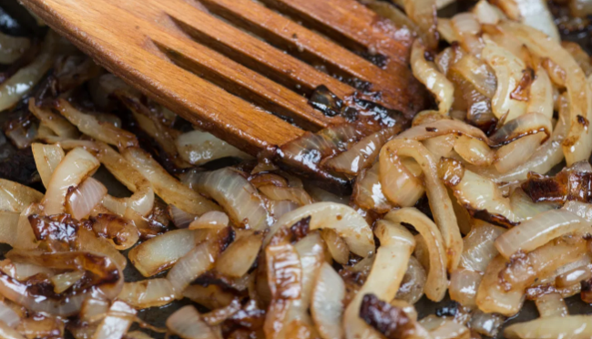
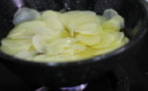
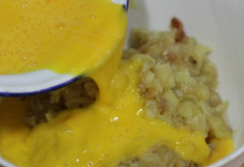
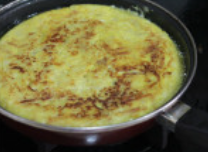

Volver al menú
Receta Tortilla
En esta web vais a poder ver como hacer la mejor tortilla paso a paso!!
Ingredientes (4 Pax)
Para hacer nuestra maravillosa tortilla para 4 personas necesitaremos:
- 700g de patatas
- 300g de cebollas
- 6 Huevos
- Sal al gusto
- Aceite de oliva al gusto
Paso a Paso de la Receta
- Dificultad: Media
- Tiempo de elaboración 30min
- Tiempo de cocción 15min
- Primer paso: Preparamos la cebolla y la dejamos en el fuego lento para caramelizarla

- Segundo paso: Mientras se hace la cebolla pelamos, cortamos las patatas y las dejamos en agua 15 minutos

- Tercer paso: Rompemos los huevos, mezclamos bien los 3 ingredientes y ya los ponemos en la sarten

- Quarto paso: Cuando la tortilla lleve 4 minutos en la sarten, le damos la vuelta hasta que se haga por el otro lado
- último paso: Una vez ya esté bien hecha, la sacaremos de la sartén y la emplataremos correctamente

Resultado Final
Una vez realizados todos los pasos anteriores ya habreis acabado la receta!! En la imagen podeis ver el resultado final de como os quedará si lo haceis bien!!

Volver al principio de la receta